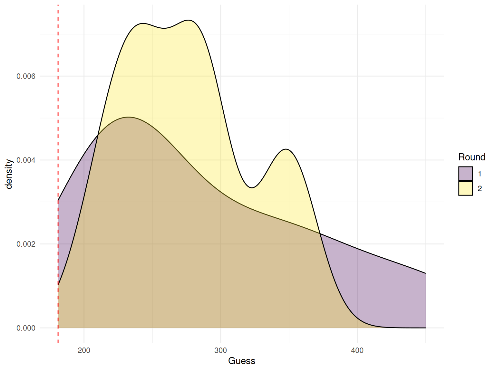

Week 13 - Collective behavior
Dad Joke
What does a sprinter eat before a race?
Nothing, they fast!
Housekeeping
- Exam is due on Thursday before class
- Under quizzes on Brightspace
- Remember, it will give you new random questions if you come back
- For the R question, turn in what you get even if you don’t get the whole thing right
- Whodunnit game on Thursday
- How many people will be here?
Upcoming Assignments
- Final project rough draft (April 26)
- Peer feedback (Due April 28)
Review Questions
- What is “collective behavior”?
- What does collective behavior have to do with networks?
- What is “the wisdom of crowds”?
- What is groupthink? Have you seen examples?
- In Dr. Becker’s experiments, why did groups get better when communicating?
Wisdom of Crowds Activity
- Get out a piece of paper
- Guess how many pages are in this book and write down your guess
- Tell your guess (and no other information) to the two people on either side of you
- Guess again how many pages are in the book and write it on a new line (Guess 2)
Activity 2
- Guess 3: Guess the pages in this book
- Two random people will tell us their guess
- Guess 4: Guess the pages again for this book
Decentralized network

Wisdom and Madness of Crowds
Questions
- What is the “majority illusion”?
- How does the majority illusion relate to the friendship paradox?
- Majority illusion from Nicky Case activity?